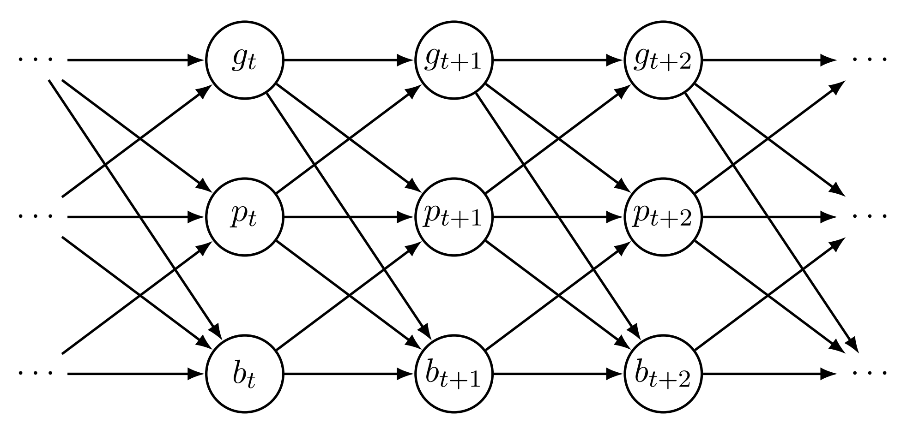
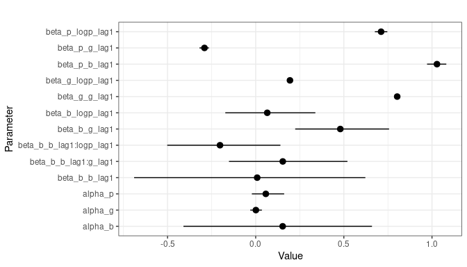
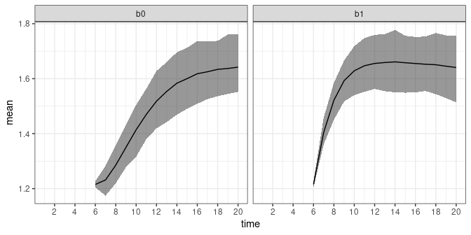
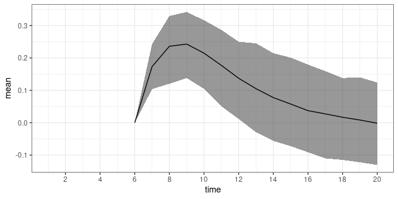
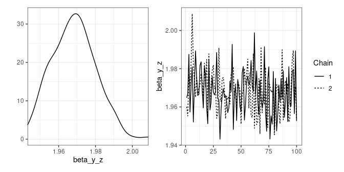
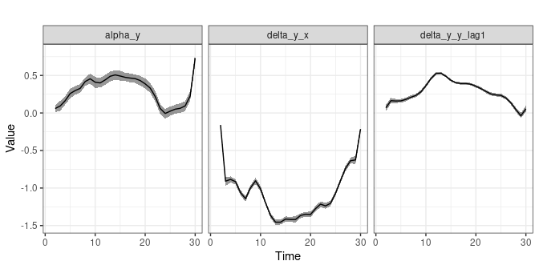
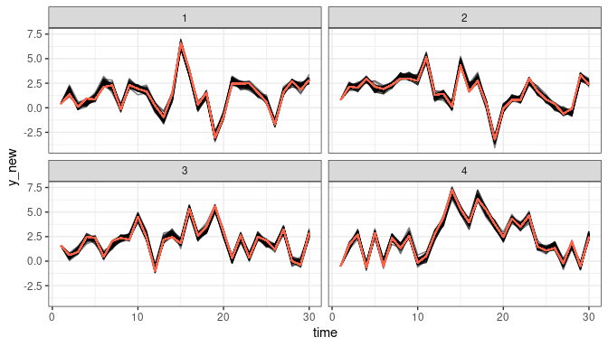

dynamite: An R Package for Dynamic Multivariate Panel Models
Source:vignettes/dynamite.Rmd
dynamite.RmdThis vignette is a modification of (Tikka and Helske 2023) which contains more examples and details.
1 Introduction
Panel data is common in various fields such as social sciences. These data consist of multiple individuals, followed over several time points, and there are often many observations per individual at each time, for example, family status and income of each individual at each time point of interest. Such data can be analyzed in various ways, depending on the research questions and the characteristics of the data such as the number of individuals and time points, and the assumed distribution of the response variables. In social sciences, popular, somewhat overlapping modeling approaches include dynamic panel models, fixed effect models, dynamic structural equation models (Asparouhov, Hamaker, and Muthén 2018), cross-lagged panel models (CLPM), and their various extensions such as CLPM with fixed or random effects Mulder and Hamaker (2021) and general cross-lagged panel model (Zyphur et al. 2020).
There are several R (R Core Team 2021) packages available from the Comprehensive R Archive Network (CRAN) focusing on analysis of panel data. The plm (Croissant and Millo 2008) package provides various estimation methods and tests for linear panel data models, while fixest (Bergé 2018) supports multiple fixed effects and different distributions of response variables (based on stats::family. The panelr (Long 2020) package contains tools for panel data manipulation and estimation methods for so-called “within-between” models which combine fixed effect and random effect models. This is done by using lme4 (Bates et al. 2015), geepack (Halekoh, Højsgaard, and Yan 2006), and brms (Bürkner 2018) packages as a backend. The lavaan (Rosseel 2012) package provides methods for general structural equation modeling and thus can be used to estimate various panel data models such as CLPMs with fixed or random intercepts. Similarly, it is also possible to use the general multilevel modeling packages lme4 and brms directly for panel data modeling. Of these, only lavaan and brms support joint modeling of multiple interdependent response variables, which is typically necessary for multi-step predictions and long-term causal effect estimation (Helske and Tikka 2022).
In traditional panel data models such as the ones supported by the aforementioned packages, the number of time points considered is often assumed to be relatively small, say less than 10, while the number of individuals can be for example hundreds or thousands. This is especially true for commonly used wide-format SEM approaches which cannot handle a large number of time points (Asparouhov, Hamaker, and Muthén 2018). Perhaps due to the small number of time points, the effects of predictors are typically assumed to be time-invariant (although some extensions to time-varying effects have emerged, e.g., Hayakawa and Hou (2019). On the other hand, when the number of time points is moderate or large, say hundreds or thousands (sometimes referred as intensive longitudinal data), it can be reasonable to assume that the dynamics of the system change over time, for example so that effects of predictors vary in time.
Modeling time-varying effects in (generalized) linear models can be based on state space models (SSMs) Helske (2022), for which there are various R implementations such as walker (Helske 2022), shrinkTVP (Knaus et al. 2021), and CausalImpact (Brodersen et al. 2014). However, these implementations are restricted to a non-panel setting of single individual and single response variable. Other approaches include methods based on the varying coefficients models Eubank et al. (2004), implemented in tvReg (Casas and Fernandez-Casal 2019) and tvem (Dziak et al. 2021) packages. While tvem supports multiple individuals, it does not support multiple response variables per individual. The tvReg supports only univariate single-individual responses. Also based on SSMs and differential equations, the dynr (Ou, Hunter, and Chow 2019) package provides methods for modeling multivariate dynamic regime-switching models with linear or non-linear latent dynamics and linear-Gaussian observations. Because both multilevel models and SEMs can be defined as SSMs Chow et al. (2010), other packages supporting general SSMs could be in principle suitable for panel data analysis as well (e.g., KFAS (Helske 2017), bssm (Helske and Vihola 2021), and pomp (King, Nguyen, and Ionides 2016)). However, SSMs are often computationally demanding especially for non-Gaussian observations where the marginal likelihood is analytically intractable, and the large number of individuals can be problematic particularly in the presence of additional group-level random effects which complicates the construction of the corresponding state space model (Helske 2017).
The dynamite (Tikka and Helske 2022) package provides an alternative approach to panel data inference which avoids some of the limitations and drawbacks of the aforementioned methods. First, the dynamic multivariate panel data models (DMPMs), introduced in (Helske and Tikka 2022) and implemented in the dynamite package support estimation of effects that vary smoothly over time according to Bayesian P-splines (Lang and Brezger 2004), with penalization based on random walk priors. This allows modeling for example effects of interventions which increase or decrease over time. Second, dynamite supports a wide variety of distributions for the response variables such as Gaussian, Poisson, binomial, and categorical distributions. Third, with dynamite we can model an arbitrary number of simultaneous measurements per individual. Finally, the estimation is fully Bayesian using Stan (Stan Development Team 2022, rstan), which leads to transparent and interpretable quantification of parameter and predictive uncertainty.
One of the most defining features of dynamite is its high-performance prediction function, which is fully automated, supports multi-step predictions over the entire observed time-interval, and can operate at the individual-level or group-level. This is in stark contrast to packages such as brms where, in presence of lagged response variables as covariates, obtaining such predictions necessitates the computation of manual stepwise predictions and can pose a challenge even for an experienced user. Furthermore, by jointly modeling all endogenous variables simultaneously, dynamite allows us to consider the long-term effects of interventions which take into account the interdependence of several variables of the model.
The vignette is organized as follows. In Section 2 we introduce the dynamic multivariate panel model which is the class of models considered in the dynamite package and describe the assumptions made in the package with respect to these models. Section 3 introduces the software package and its core features along with two illustrative examples using a real dataset and a synthetic dataset. Sections 4 and 5 provide a more comprehensive and technical overview on how to define and estimate models using the package, respectively. The use of the model fit objects for prediction is discussed in Section 6. Finally, Section 7 provides some concluding remarks.
2 The dynamic multivariate panel model
Consider an individual \(i\) with observations \(y_{i,t} = (y^1_{i,t}, \ldots, y^c_{i,t},\ldots, y^C_{i,t})\), \(t=1,\ldots,T\), \(i = 1,\ldots,N\) i.e., at each time point \(t\) we have \(C\) observations from \(N\) individuals, where \(C\) is the number of channels, i.e., different response variables that have been measured. Assume that each element of \(y_{i,t}\) can depend on the past observations \(y_{i,t-\ell}\), \(\ell=1,\ldots\) (where the set of past values can be different for each channel) and also on additional exogenous covariates \(x_{i,t}\). In addition, \(y^c_{i,t}\) can depend on the elements of current \(y_{i,t}\), assuming that this does not lead to cyclic dependencies; this translates to a condition that the channels can be ordered so that \(y^c_{i,t}\) depends only on \(y^1_{i,t}, \ldots, y^{c-1}_{i,t}\), exogenous covariates, and past observations. For simplicity of the presentation, we now assume that the observations of each channel only depend on the previous time points, i.e., \(\ell = 1\) for all channels. We denote the set of all model parameters by \(\theta\). Now, assuming that the elements of \(y_{i,t}\) are independent given \(y_{i, t-1}\), \(x_{i,t}\), and \(\theta\) we have \[ \begin{aligned} y_{i,t} &\sim p_t(y_{i,t} | y_{i,t-1},x_{i,t},\theta) = \prod_{c=1}^C p^c_t(y^c_{i,t} | y^1_{i,t-1}, \ldots, y^C_{i,t-1}, x_{i,t}, \theta). \end{aligned} \] Importantly, the parameters of the conditional distributions \(p^c\) are time-dependent, enabling us to consider the evolution of the dynamics of our system over time.
Given a suitable link function depending on our distributional assumptions, we define a linear predictor \(\eta^c_{i,t}\) for the conditional distribution \(p^c_t\) of each channel \(c\) with the following general form: \[ \begin{aligned} \eta^c_{i,t} &= \alpha^c_{t} + X^{\beta, c}_{i,t} \beta^c + X^{\delta, c}_{i,t} \delta^c_{t} + X^{\nu, c}_{i,t} \nu_i^c + \lambda^c_i \psi^c_t, \end{aligned} \] where \(\alpha_t\) is the (possibly time-varying) common intercept term, \(X^{\beta, c}_{i,t}\) defines the predictors corresponding to the vector of time-invariant coefficients \(\beta^c\), and similarly for the time-varying term \(X^{\delta, c}_{i,t} \delta^c_{t}\). The term \(X^{\nu, c}_{i,t} \nu^c_{t}\) corresponds to individual-level random effects, where \(\nu^1_{i},\ldots, \nu^C_{i}\) are assumed to follow zero-mean Gaussian distribution, either with a diagonal or a full covariance matrix. Note that the predictors in \(X^{\beta, c}_{i,t}\), \(X^{\delta, c}_{i,t}\), and \(X^{\nu, c}_{i,t}\) may contain exogenous covariates or past observations of the response channels (or transformations of either).The final term \(\lambda^c_i \psi^c_t\) is a product of latent individual loadings \(\lambda^c_i\) and a univariate latent dynamic factor \(\psi^c_t\).
For time-varying coefficients \(\delta\) (and similarly for time-varying \(\alpha\) and latent factor \(\psi\)), we use Bayesian P-splines (penalized B-splines) (Lang and Brezger 2004) where \[ \delta^c_{k,t} = B_t \omega_k^c, \quad k=1,\ldots,K, \] where \(K\) is the number of covariates, \(B_t\) is a vector of B-spline basis function values at time \(t\) and \(\omega_k^c\) is a vector of corresponding spline coefficients. In general, the number of B-splines \(D\) used for constructing the splines for the study period \(1,\ldots,T\) can be chosen freely, but the actual value is not too important (as long as \(D \leq T\) and larger than the degree of the spline, e.g., three in case of cubic splines) (Wood 2020). Therefore, we use the same \(D\) basis functions for all time-varying effects. To mitigate overfitting due to too large a value of \(D\), we define a random walk prior for \(\omega^c_k\) as \[ \omega^c_{k,1} \sim p(\omega^c_{k,1}), \quad \omega^c_{k,d} \sim N(\omega^c_{k,d-1}, (\tau^c_k)^2), \quad d=2, \ldots, D. \] with a user defined prior \(p(\omega^c_{k,1})\) on the first coefficient, which due to the structure of \(B_1\) corresponds to the prior on the \(\delta^c_{k,1}\). Here, the parameter \(\tau^c_k\) controls the smoothness of the spline curves. While the different time-varying coefficients are modeled as independent a priori, the latent factors \(\psi\) can be modeled as correlated via correlated spline coefficients \(\omega\).
3 The dynamite package
The dynamite package provides an easy-to-use interface for fitting DMPMs in R. As the package is part of rOpenSci (https://ropensci.org), it complies with its rigorous software standards and the development version of dynamite can be installed from the R-universe system (https://ropensci.org/r-universe/). The stable version of the package is available from CRAN at (https://cran.r-project.org/package=dynamite). The software is published under the GNU general public license (GPL \(\geq\) 3) and can be obtained in R by running the following commands:
install.packages("dynamite")
library("dynamite")The package takes advantage of several other well established R packages. Estimation of the models is carried out by Stan for which both rstan and cmdstanr (Gabry and Češnovar 2022) interfaces are available. The data.table (Dowle and Srinivasan 2022) package is used for efficient computation and memory management of predictions and internal data manipulations. For posterior inference and visualization, ggplot2 (Wickham 2016), and posterior (Bürkner et al. 2022) packages are leveraged. Leave-one-out (LOO) and leave-future-out (LFO) cross-validation methods are implemented with the help of the loo (Vehtari et al. 2022) package. All of the aforementioned dependencies are available on CRAN with the exception of cmdstanr whose installation is optional and needed only if the user wishes to use the CmdStan backend for Stan.
Several example datasets and corresponding model fit objects are included in dynamite which are also used throughout this paper for illustrative purposes. The script files to generate these datasets and the model fit objects can be found in the package GitHub repository (https://github.com/ropensci/dynamite/) under the data-raw directory. Before presenting the more technical details, we demonstrate the key features of the package and the general workflow by performing an illustrative analysis on a synthetic dataset.
3.1 Causal effects in a multichannel model
We now consider the following simulated multichannel data available in the dynamite package:
head(multichannel_example)
#> id time g p b
#> 1 1 1 -0.6264538 5 1
#> 2 1 2 -0.2660091 12 0
#> 3 1 3 0.4634939 9 1
#> 4 1 4 1.0451444 15 1
#> 5 1 5 1.7131026 10 1
#> 6 1 6 2.1382398 8 1The data contains 50 unique groups (variable id), over 20 time points (time), a continuous variable \(g_t\) (g), a variable with non-negative integer
values \(p_t\) (p), and a binary variable \(b_t\) (b). We define the following model (which actually matches the data generating process used in generating the data):
multi_formula <- obs(g ~ lag(g) + lag(logp), family = "gaussian") +
obs(p ~ lag(g) + lag(logp) + lag(b), family = "poisson") +
obs(b ~ lag(b) * lag(logp) + lag(b) * lag(g), family = "bernoulli") +
aux(numeric(logp) ~ log(p + 1))Here, the aux() creates a deterministic transformation of \(p_t\) as \(\log(p_t + 1)\) which can subsequently be used in other channels as a predictor and correctly computes the transformation for predictions. A directed acyclic graph (DAG) that depicts the model is shown in Figure 3.1.

Figure 3.1: A directed acyclic graph for the multichannel model with arrows corresponding to the assumed direct causal effects. A cross-section at times \(t\), \(t+1\), and \(t+2\) is shown. The nodes corresponding to the deterministic tranformation \(\log(p_t)\) are omitted for clarity.
We fit the model using the dynamite() function. In order to satisfy the package size requirements of CRAN, we have to use small number of iterations and additional thinning:
multichannel_example_fit <- dynamite(
multi_formula, data = multichannel_example,
time = "time", group = "id",
chains = 1, cores = 1, iter = 2000, warmup = 1000, init = 0, refresh = 0,
thin = 5, save_warmup = FALSE)You can update the estimated model which is included in the package as
multichannel_example_fit <- update(multichannel_example_fit,
iter = 2000,
warmup = 1000,
chains = 4,
cores = 4,
refresh = 0,
save_warmup = FALSE
)Note that the dynamite call above produces a warning message related to the deterministic channel logp:
#> Warning: Deterministic channel `logp` has a maximum lag of 1 but you've supplied no
#> initial values:
#> ℹ This may result in NA values for `logp`.This happens because the formulas of the other channels have lag(logp) as a predictor, whose value is undefined at the first time point without the initial value. However, in this case we can safely ignore the warning because the model contains lags of b and g as well meaning that the first time point in the model is treated as fixed and does not enter the model fitting process.
We can obtain posterior samples or summary statistics of the model using the as.data.frame(), coef(), and summary() methods, but here we opt for visualizing the results as depicted in Figure 3.2 by using the plot_betas function:

Figure 3.2: Posterior means and 90% intervals of the time-invariant coefficients for the multichannel model.
Note the naming of the model parameters; for example, beta_b_g_lag1 corresponds to a time-invariant coefficient beta of the lagged predictor g of the channel b.
Assume now that we are interested in the causal effect of \(b_5\) on \(g_t\) at times \(t = 6, \ldots, 20\). There is no direct effect from \(b_5\) to \(g_6\), but because \(g_t\) affects \(b_{t+1}\) (and \(p_{t+1}\)), which in turn has an effect on all the variables at \(t+2\), we should see an indirect effect of \(b_5\) to \(g_t\) from time \(t = 7\) onward. For this task, we first create a new dataset where the values of our response variables after time \(t = 5\) are assigned to be missing:
multichannel_newdata <- multichannel_example |>
mutate(across(g:b, ~ ifelse(time > 5, NA, .x)))We then obtain predictions for time points \(t = 6,\ldots,20\) when \(b_t\) is assigned to be 0 or 1 for every individual at time \(t = 5\):
new0 <- multichannel_newdata |> mutate(b = ifelse(time == 5, 0, b))
pred0 <- predict(multichannel_example_fit, newdata = new0, type = "mean")
new1 <- multichannel_newdata |> mutate(b = ifelse(time == 5, 1, b))
pred1 <- predict(multichannel_example_fit, newdata = new1, type = "mean")By default, the output from predict() is a single data frame containing the original new data and the samples from the posterior predictive distribution of new observations. By defining type = "mean" we specify that we are interested in the posterior distribution of the expected values instead. In this case the the predicted values in a data frame are in the columns g_mean, p_mean, and b_mean where the NA values of the newdata argument are replaced with the posterior samples from the model (the output also contains an additional column corresponding to the auxiliary channel logp and posterior draw index variable .draw).
head(pred0, n = 10) |> round(3)
#> g_mean p_mean b_mean logp id time .draw g p b
#> 1 NA NA NA 1.792 1 1 1 -0.626 5 1
#> 2 NA NA NA 2.565 1 2 1 -0.266 12 0
#> 3 NA NA NA 2.303 1 3 1 0.463 9 1
#> 4 NA NA NA 2.773 1 4 1 1.045 15 1
#> 5 NA NA NA 2.398 1 5 1 1.713 10 0
#> 6 1.837 3.770 0.799 1.099 1 6 1 NA NA NA
#> 7 1.892 3.581 0.808 0.693 1 7 1 NA NA NA
#> 8 1.850 2.682 0.818 0.693 1 8 1 NA NA NA
#> 9 1.816 2.715 0.813 1.386 1 9 1 NA NA NA
#> 10 1.673 4.803 0.765 1.792 1 10 1 NA NA NAWe can now compute summary statistics over the individuals and then over the posterior samples to obtain posterior distribution of the causal effects \(E(g_t | do(b_5))\) as
sumr <- bind_rows(list(b0 = pred0, b1 = pred1), .id = "case") |>
group_by(case, .draw, time) |>
summarise(mean_t = mean(g_mean)) |>
group_by(case, time) |>
summarise(
mean = mean(mean_t),
q5 = quantile(mean_t, 0.05, na.rm = TRUE),
q95 = quantile(mean_t, 0.95, na.rm = TRUE)
)It is also possible to perform the marginalization over groups within predict() by using the argument funs, which can be used to provide a named list of lists which contains functions to be applied for the corresponding channel. This approach can save considerably amount of memory in case of large number of groups. The names of the outermost list should be channel names. The output is now returned as a "list" with two components, simulated and observed, with the new samples and the original newdata respectively. In our case we can write
pred0b <- predict(
multichannel_example_fit, newdata = new0, type = "mean",
funs = list(g = list(mean_t = mean))
)$simulated
pred1b <- predict(
multichannel_example_fit, newdata = new1, type = "mean",
funs = list(g = list(mean_t = mean))
)$simulated
sumrb <- bind_rows(
list(b0 = pred0b, b1 = pred1b), .id = "case") |>
group_by(case, time) |>
summarise(
mean = mean(mean_t_g),
q5 = quantile(mean_t_g, 0.05, na.rm = TRUE),
q95 = quantile(mean_t_g, 0.95, na.rm = TRUE)
)The resulting data frame sumrb is equal to the previous sumr (apart from stochasticity due to simulation of new trajectories). We can then visualize our predictions as shown in Figure 3.3 by writing:
ggplot(sumr, aes(time, mean)) +
geom_ribbon(aes(ymin = q5, ymax = q95), alpha = 0.5) +
geom_line() +
scale_x_continuous(n.breaks = 10) +
facet_wrap(~ case)
Figure 3.3: Expected causal effects of interventions \(do(b_5 = 0)\) and \(do(b_5 = 1)\) on \(g_t\).
Note that these estimates do indeed coincide with the causal effects (assuming of course that our model is correct), as we can find the backdoor adjustment formula (Pearl 1995)
\[
E(g_t | do(b_5 = x)) = \sum_{g_5, p_5}E(g_t | b_5 = x, g_5, p_5)P(g_5, p_5),
\]
which is equal to mean_t in above codes. We can also compute the difference \(E(g_t | do(b_5 = 1)) - E(g_t | do(b_5 = 0))\) to directly compare the effects of the interventions by writing:
sumr_diff <- bind_rows(list(b0 = pred0, b1 = pred1), .id = "case") |>
group_by(.draw, time) |>
summarise(
mean_t = mean(g_mean[case == "b1"] - g_mean[case == "b0"])
) |>
group_by(time) |>
summarise(
mean = mean(mean_t),
q5 = quantile(mean_t, 0.05, na.rm = TRUE),
q95 = quantile(mean_t, 0.95, na.rm = TRUE)
)We can also plot the difference in the expected causal effects as shown in Figure 3.4 by running:
ggplot(sumr_diff, aes(time, mean)) +
geom_ribbon(aes(ymin = q5, ymax = q95), alpha = 0.5) +
geom_line() +
scale_x_continuous(n.breaks = 10)
Figure 3.4: Difference of the expected causal effects \(E(g_t | do(b_5 = 1)) - E(g_t | do(b_5 = 0))\).
Which shows that there is a short term effect of \(b\) on \(g\), although the posterior uncertainty is quite large.
4 Model construction
Here we describe the various model components that be included in the model formulas of the package. These components are modular and easily combined in any order via a specialized + operator, which also ensures that the model formula is well-defined and syntactically valid before estimating the model. The model formula components define the response channels, auxiliary channels, the splines used for time-varying coefficients, correlated random effects, and latent factors.
4.1 Defining response channels
The response channels are defined by combining the channel-specific formulas defined via the function dynamiteformula() for which a shorthand alias obs() is also provided. The function obs() takes two arguments: formula and family, which define how the response variable of the channel depends on the predictor variables in the standard R formula syntax and the family of the response variable as a `character' string, respectively. These channel-specific definitions are then combined into a single model with the + operator. For example, the following formula
defines a model with two channels. First, we declare that y is a gaussian variable depending on the previous value of x (lag(x)) and then we add a second channel declaring x as Poisson distributed depending on some exogenous variable z (for which we do not define any distribution). Note that the model formula can be defined without any reference to some external data, just as an R formula can. The model formula is an object of class "dynamiteformula" for which the print() method is available which provides a summary of the defined channels and other model components:
print(dform)
#> Family Formula
#> y gaussian y ~ lag(x)
#> x poisson x ~ zCurrently, the package supports the following distributions for the observations:
-
Categorical (
"categorical") with a softmax link using the first category as the reference. It is recommended to use Stan version 2.23 or higher which enables the use of thecategorical_logit_glmfunction in the generated Stan code for improved computational performance. See the documentation ofcategorical_logit_glmin the Stan function reference manual (https://mc-stan.org/users/documentation/) for further information. -
Gaussian (
"gaussian") identity link, parameterized using mean and standard deviation. -
Poisson (
"poisson") log-link, with an optional known offset variable. -
Negative-binomial (
"negbin") log-link, using mean and dispersion parameterization, with an optional known offset variable. See the documentation on theNegBinomial2function in the Stan function reference manual. -
Bernoulli (
"bernoulli") logit-link. -
Binomial (
"binomial") logit-link. -
Exponential (
"exponential") log-link. -
Gamma (
"gamma") log-link, using mean and shape parameterization. -
Beta (
"beta") logit-link, using mean and precision parameterization. -
Multivariate Gaussian (
"mvgaussian") identity link, parameterized using means, standard deviations and cholesky factor of the correlation matrix. -
Multinomial (
"multinomial") with a softmax link.
There is also a special response variable type "deterministic" which can be used to define deterministic transformations of other variables in the model. This special type is explained in greater detail in Section 4.6.
4.2 Lagged responses and predictors
Models in the dynamite package have limited support for contemporaneous dependencies in order to avoid complex cyclic dependencies which would make handling missing data, subsequent predictions, and causal inference challenging or impossible. In other words, the model structure must be acyclic, meaning that there is an order of the response variables such that each response at time \(t\) can be unambiguously defined in this order in terms of responses that have already been defined at time \(t\) or in terms of other variables in the model at time \(t-1\). The acyclicity of model formulas defined by the user is checked automatically upon construction. To demonstrate, the following formula is valid:
but the following is not and produces an error due to a cyclic dependency between the responses:
obs(y ~ x, family = "gaussian") +
obs(x ~ z, family = "poisson") +
obs(z ~ y, family = "categorical")
#> Error in `join_dynamiteformulas()`:
#> ! The model must be acyclic.On the other hand, there are no limitations concerning dependence of response variables and their previous values or previous values of exogenous predictors, i.e., lags. In the first example of Section 4.1 we used the syntax lag(x), a shorthand for lag(x, k = 1), which defines a one-step lag of the variable x. Higher order lags can also be defined by adjusting the argument k. The argument x of lag() can either be a response variable or an exogenous predictor.
The model component lags() can also be used to quickly add lagged responses as predictors across multiple channels. This component adds a lagged value of each response in the model as a predictor to every channel. For example, calling
would add lag(y, k = 1) and lag(x, k = 1) as predictors of x and y. Therefore, the previous code would produce the same model as writing
obs(y ~ z + lag(y, k = 1) + lag(x, k = 1), family = "gaussian") +
obs(x ~ z + lag(y, k = 1) + lag(x, k = 1), family = "poisson")The function lags() can help to simplify the individual model formulas, especially in the case where the model consists of many channels each containing a large number of lags. Just as with the function lag(), the argument k in lags() can be adjusted to add higher order lags of each response to each channel, but for lags() it can also be a vector so that multiple lags can be added at once. The inclusion of lagged response variables in the model implies that some time points have to be considered fixed in the estimation. The number of fixed time points in the model is equal to the largest shift value \(k\) of any observed response variable in the model (defined either via lag() terms or the model component lags()).
4.3 Time-varying and time-invariant predictors
The formula argument of obs() can also contain an additional special term varying(), which defines the time-varying part of the model equation. For example, we could write
obs(x ~ z + varying(~ -1 + w), family = "poisson")to define a model equation with a constant intercept, a time-invariant effect of z, and a time-varying effect of w. We also remove the duplicate intercept with -1 within varying() in order to avoid identifiability issues in the model estimation. We could also define a time-varying intercept, in which case we would write:
obs(x ~ -1 + z + varying(~ w), family = "poisson")The part of the formula not wrapped with varying() is assumed to correspond to the time-invariant part of the model, which can alternatively be defined with the special syntax fixed(). This means that the following lines would all produce the same model:
obs(x ~ z + varying(~ -1 + w), family = "poisson")
obs(x ~ -1 + fixed(~ z) + varying(~ -1 + w), family = "poisson")
obs(x ~ fixed(~ z) + varying(~ -1 + w), family = "poisson")The use of fixed() is therefore optional in the formula. If both time-varying and time-invariant intercepts are defined, the model will default to using a time-varying intercept and provides an appropriate warning for the user:
dform_warn <- obs(y ~ 1 + varying(~1), family = "gaussian")
#> Warning: Both time-independent and time-varying intercept specified:
#> ℹ Defaulting to time-varying intercept.When defining time-varying effects, we also need to define how their respective regression coefficient behave. For this purpose, a splines() component should be added to the model formula, e.g.,
defines a cubic B-spline with 10 degrees of freedom for the time-varying coefficients, which corresponds to the variable w in this instance. If the model contains multiple time-varying coefficients, the same spline basis is used for all coefficients, with unique spline coefficients and their corresponding random-walk standard deviations. The splines() component constructs the matrix of cardinal B-splines \(B_t\) using the bs() function of the splines package based on the degrees of freedom df and spline degree degree (default being 3 corresponding to cubic B-splines). It is also possible to switch between centered (the default) and non-centered parameterization (Papaspiliopoulos, Roberts, and Sköld 2007) for the spline coefficients using the noncentered argument of the splines() component. This can affect the sampling efficiency of Stan, depending on the model and the informativeness of data (Betancourt and Girolami 2013).
4.4 Group-level random effects
Random effect terms for each group can be defined using the special term random() within the formula argument of obs(), analogously to varying(). By default, all random effects within a group and across all channels are modeled as zero-mean multivariate normal. The optional model component random_spec() can be used to define non-correlated random effects as random_spec(correlated = FALSE). In addition, as with the spline coefficients, it is possible to switch between centered and non-centered (the default) parameterization of the random effects using the noncentered argument of random_spec().
For example, the following code defines a Gaussian response variable x with a time-invariant common effect of z as well as a group-specific intercept and group-specific effect of z.
obs(x ~ z + random(~1 + z), family = "gaussian")The variable that defines the groups in the data is provided in the call to the model fitting function dynamite() as shown in Section 5.
4.5 Latent factors
Instead of common time-varying intercept terms, it is possible to define channel-specific univariate latent factors using the lfactor() model component. Each latent factor is modeled as a spline, with degrees of freedom and spline degree defined via the splines() component (in the case that the model also contains time-varying effects, the same spline basis definition is currently used for both latent factors and time-varying effects). The argument responses of lfactor() defines which channels should contain a latent factor, while argument correlated determines whether the latent factors should modeled as correlated. Again, users can switch between centered and non-centered parameterizations using the argument noncentered_psi.
In general, dynamic latent factors are not identifiable without imposing some constraints on the factor loadings \(\lambda\) or the latent factor \(\psi\) (Bai and Wang 2015), especially in the context of DMPMs and dynamite. In dynamite these identifiability problems are addressed via internal reparameterization and an additional argument nonzero_lambda which determines whether we assume that the expected value of the factor loadings is zero or not. The theory and thorough experiments regarding the robustness of these identifiability constraints is a work in progress, so some caution should be used regarding the use of the lfactor() component.
4.6 Auxiliary channels
In addition to declaring response variables via obs(), we can also use the function aux() to define auxiliary channels which are deterministic functions of other variables in the model. Defining these auxiliary variables explicitly instead of defining them implicitly on the right-hand side of the formulas (i.e., by using the “as is” function I()) makes the subsequent prediction steps more clear and allows easier checks on the model validity. In fact, we do not allow the use of I() in the formula argument of dynamiteformula(). The values of auxiliary variables are computed automatically when fitting the model, and dynamically during prediction, making the use of lagged values and other transformations possible in prediction as well. An example of a model formula using an auxiliary channel could be
obs(y ~ lag(log1x), family = "gaussian") +
obs(x ~ z, family = "poisson") +
aux(numeric(log1x) ~ log(1 + x) | init(0))For auxiliary channels, the formula declaration via ~ should be understood as a mathematical equality, where the right-hand side provides the defining expression of the variable on the left-hand side. Thus, the example above defines a new auxiliary channel whose response is log1x defined as the logarithm of 1 + x and assigns it to be of type "numeric". The type declaration is required, because it might not be possible to unambiguously determine the type of the response variable based on its expression alone from the data, especially if the expression contains "factor" type variables.
Auxiliary variables can be used directly in the formulas of other channels, just like any other variable. The function aux() does not use the family argument, which is automatically set to "deterministic" and is a special channel type of the obs() function. Note that lagged values of deterministic auxiliary channels do not imply fixed time points. Instead, they must be given starting values using one of the two special syntax variants, init() or past() after the main formula separated by the | symbol.
In the example above, because the channel for y contains a lagged value of log1x as a predictor, we also need to supply log1x with a single initial value that determines the value of the lag at the first time point. Here, init(0) defines the initial value of lag(log1x) to be zero for all individuals. In general, if the model contains higher order lags of an auxiliary channel, then init() can be supplied with a vector initializing each lag.
While init() defines the same starting value to be used for all individuals, an alternative, special syntax past() can be used, which takes an R expression as its argument, and computes the starting value for each individual based on that expression. The expression is evaluated in the context of the data supplied to the model fitting function dynamite(). For example, instead of init(0) in the example above, we could write:
obs(y ~ lag(log1x), family = "gaussian") +
obs(x ~ z, family = "poisson") +
aux(numeric(log1x) ~ log(1 + x) | past(log(z)))which defines that the value of lag(log1x) at the first time point is log(z) for each individual, using the value of z in the data to be supplied to compute the actual value of the expression. The special syntax past() can also be used if the model contains higher order lags of auxiliary responses. In this case, more observations from the variables bound by the expression given as the argument will simply be used.
5 Model fitting and posterior inference
To estimate the model, the declared model formula is supplied to the dynamite() function, which has the following arguments:
dynamite(
dformula, data, time, group = NULL,
priors = NULL, backend = "rstan",
verbose = TRUE, verbose_stan = FALSE, debug = NULL, ...
)This function parses the model formula and the data to generate a custom Stan model code, which is then compiled and used to simulate the posterior distribution of the model parameters. The first three arguments of the function are mandatory. The first argument dformula is a "dynamiteformula" object that defines the model using the model components described in Section 4. The second argument data is a "data.frame" or a "data.table" object that contains the variables used in the model formula. The third argument time is a column name of data that specifies the unique time points.
The remaining arguments of the function are optional. The group argument is a column name of data that specifies the unique groups (individuals), and when group = NULL we assume that there is only a single group (or individual). The argument priors supplies user-defined priors for the model parameters. The Stan backend can be selected using the backend argument, which accepts either "rstan" (the default) or "cmdstanr". These options correspond to using the rstan and cmdstanr packages for the estimation, respectively. The verbose and verbose_stan arguments control the verbosity of the output from dynamite() and Stan, respectively. The debug argument can be used for various debugging options (see ?dynamite for further information on these parameters). Finally, ... supplies additional arguments to the backend sampling function (either rstan::sampling() or the sample() method of the CmdStanModel model object).
The data argument should be supplied in long format, i.e., with \(N \times T\) rows in case of balanced panel data. Acceptable column types of data are "integer", "logical", "double", "character", and objects of class "factor". Columns of the "character" type will be converted to "factor" columns. Beyond these standard types, any special classes such as "Date" whose internal storage type is one of aforementioned types can be used, but these classes will be dropped, and the columns will be converted to their respective storage types. List columns are not supported. The time argument should be a "numeric" or a "factor" column of data. If time is a "factor" column, it will be converted to an "integer" column. For categorical response channels, "ordered factor" columns are also accepted, and they will be converted to unordered "factor" columns. Missing values in both response and predictor columns are supported but non-finite values are not. Observations with missing predictor or response values are omitted from the data when the model is fitted.
As an example, the following function call would estimate the model using data in the data frame d, which contains the variables year and id (defining the time-index and group-index variables of the data, respectively). Arguments chains and cores are passed to rstan::sampling() which then uses two parallel Markov chains in the Markov chain Monte Carlo (MCMC) sampling of the model parameters.
dynamite(
dformula = obs(x ~ varying(~ -1 + w), family = "poisson") +
splines(df = 10),
data = d, time = "year", group = "id",
chains = 2, cores = 2
)The output of dynamite is a "dynamitefit" object for which the standard S3 methods such as summary(), plot(), print(), fitted(), and predict() are provided along with various other methods and utility functions which we will describe in the following sections in more detail.
5.0.1 User-defined priors
The function get_priors() can be used to determine the parameters of the model whose prior distribution can be customized. The function can be applied to an existing model fit object ("dynamitefit") or a model formula object ("dynamiteformula"). The function returns a "data.frame" object, which the user can then manipulate to include their desired priors and consequently supply to the model fitting function dynamite().
For instance, using the model fit object gaussian_example_fit available in the dynamite package, we have the following priors:
get_priors(gaussian_example_fit)
#> parameter response prior type category
#> 1 sigma_nu_y_alpha y normal(0, 3.1) sigma_nu
#> 2 alpha_y y normal(1.5, 3.1) alpha
#> 3 tau_alpha_y y normal(0, 3.1) tau_alpha
#> 4 beta_y_z y normal(0, 3.1) beta
#> 5 delta_y_x y normal(0, 3.1) delta
#> 6 delta_y_y_lag1 y normal(0, 1.8) delta
#> 7 tau_y_x y normal(0, 3.1) tau
#> 8 tau_y_y_lag1 y normal(0, 1.8) tau
#> 9 sigma_y y exponential(0.65) sigmaTo change a prior distribution, the user only needs to manipulate the prior column of the desired parameters using the appropriate Stan syntax and parameterization. For a categorical response variable, the column category describes which category the parameter is related to. For model parameters of the same type and response, a vectorized form the corresponding distribution is automatically used in the generated Stan code if applicable.
5.1 Methods for "dynamitefit" objects
We can obtain a simple model summary with the print() method of objects of class "dynamitefit". For instance, the model fit object gaussian_example_fit gives the following summary:
print(gaussian_example_fit)
#> Model:
#> Family Formula
#> y gaussian y ~ -1 + z + varying(~x + lag(y)) + random(~1)
#>
#> Correlated random effects added for response(s): y
#>
#> Data: gaussian_example (Number of observations: 1450)
#> Grouping variable: id (Number of groups: 50)
#> Time index variable: time (Number of time points: 30)
#>
#> NUTS sampler diagnostics:
#>
#> No divergences, saturated max treedepths or low E-BFMIs.
#>
#> Smallest bulk-ESS: 189 (tau_y_y_lag1)
#> Smallest tail-ESS: 156 (beta_y_z)
#> Largest Rhat: 1.006 (beta_y_z)
#>
#> Elapsed time (seconds):
#> warmup sample
#> chain:1 5.794 2.152
#> chain:2 5.868 3.449
#>
#> Summary statistics of the time- and group-invariant parameters:
#> # A tibble: 6 × 10
#> variable mean median sd mad q5 q95 rhat ess_bulk ess_tail
#> <chr> <dbl> <dbl> <dbl> <dbl> <dbl> <dbl> <dbl> <dbl> <dbl>
#> 1 beta_y_z 1.97 1.97 0.0118 0.0118 1.95 1.99 1.01 192. 156.
#> 2 sigma_nu_y… 0.0933 0.0941 0.0100 0.00973 0.0771 0.110 0.996 240. 231.
#> 3 sigma_y 0.197 0.198 0.00375 0.00365 0.191 0.203 1.01 223. 181.
#> 4 tau_alpha_y 0.213 0.208 0.0445 0.0443 0.154 0.297 0.997 199. 184.
#> 5 tau_y_x 0.358 0.349 0.0658 0.0646 0.267 0.469 0.999 209. 186.
#> 6 tau_y_y_la… 0.104 0.101 0.0180 0.0179 0.0780 0.134 1.00 189. 166.Convergence of the MCMC chains and the smallest effective sample sizes of the model parameters can be assessed using the mcmc_diagnostics() method of "dynamitefit" object whose arguments are the model fit object and n, the number of potentially problematic variables report (default is 3). We refer the reader to the documentation of the rstan::check_hmc_diagnostics() and posterior::default_convergence_measures() for detailed information on the diagnostics reported by function.
mcmc_diagnostics(gaussian_example_fit)
#> NUTS sampler diagnostics:
#>
#> No divergences, saturated max treedepths or low E-BFMIs.
#>
#> Smallest bulk-ESS values:
#>
#> nu_y_alpha_id50 40
#> alpha_y[14] 114
#> alpha_y[20] 117
#>
#> Smallest tail-ESS values:
#>
#> alpha_y[10] 54
#> alpha_y[13] 64
#> delta_y_y_lag1[11] 111
#>
#> Largest Rhat values:
#>
#> nu_y_alpha_id50 1.06
#> delta_y_x[12] 1.03
#> nu_y_alpha_id35 1.03Note that due to CRAN restrictions the number of stored posterior samples in this example dynamitefit object is very small, leading to the small effective sample sizes.
A table of posteriors draws or summaries of each parameter of the model can be obtained with the method as.data.frame() and as.data.table() which differ only in their output type which are "data.frame" and "data.table", respectively. More specifically, the output of as.data.frame() is a tibble; a tidyverse variant of data frames (of class "tbl_df" as defined in the tibble (Müller and Wickham 2022) package). These functions have the following arguments:
as.data.frame.dynamitefit(
x, row.names = NULL, optional = FALSE, parameters = NULL, responses = NULL,
types = NULL, summary = FALSE, probs = c(0.05, 0.95), include_fixed = TRUE, ...
)Here, x is the "dynamitefit" object and parameters is a "character" vector that determines which parameters should be included in the output. If parameters is not used, a "character" vector argument responses can be used to determine the channels whose parameters should be included, whereas types is a "character" vector that selects a subset of parameters to extract. For determining suitable options for arguments parameters and types, methods get_parameter_names() and get_parameter_types() can be used. The argument summary determines whether to provide summary statistics (mean, standard deviation and quantiles selected by argument probs) of each parameter, or the full posterior draws. The argument include_fixed determines whether to include parameters related to fixed time points in the output (see Section 4.2 for details on fixed time points). The arguments row.names, optional and ... are ignored for "dynamitefit" objects.
For instance, we can extract the posterior summary of the time-invariant regression coefficients (type = "beta") for the response variable y in the gaussian_example_fit object by writing:
as.data.frame(
gaussian_example_fit,
responses = "y", types = "beta", summary = TRUE
)
#> # A tibble: 1 × 10
#> parameter mean sd q5 q95 time group category response type
#> <chr> <dbl> <dbl> <dbl> <dbl> <int> <int> <chr> <chr> <chr>
#> 1 beta_y_z 1.97 0.0118 1.95 1.99 NA NA NA y betaFor "dynamitefit" objects, the summary() method is a shortcut for as.data.frame(summary = TRUE).
The default plot() method for "dynamitefit" objects produces the marginal posterior densities and traceplots of the MCMC chains for the desired parameters by using the ggplot2 package to produce the plot. This method has the same parameters and responses arguments as the as.data.frame() method, and the argument type, which is analogous to the types argument of as.data.frame(), but accepts only a single character string for plotting parameters of a specific type. Figure 5.1 shows the posterior density and traceplot of the beta_y_z parameter, which is the time-invariant regression coefficient of y in the gaussian_example_fit model.
plot(gaussian_example_fit, responses = "y", type = "beta")
Figure 5.1: Posterior density and traceplots for the time-invariant regression coefficient of z in the model for the response variable y (parameter beta_y_z) in the gaussian_example_fit model.
There are also customized plotting functions available for specific parameters types: plot_betas(), plot_deltas(), plot_nus(), plot_lambdas() and plot_psis(), which correspond to time-invariant regression coefficients, time-varying regression coefficients, group-specific random effects, latent factor loadings, and latent factors. For instance, we can obtain the posteriors of the time-varying coefficients for the gaussian_example_fit object to see how the parameter values change over time, as shown in Figure 5.2.
plot_deltas(gaussian_example_fit) + labs(title = "")
Figure 5.2: Posterior mean and 90% intervals of the time-varying coefficients for the gaussian_example_fit model. The panels from left to right show the time-varying intercept for y, the time-varying effect of x on y, and the time-varying effect of lag(y) (the previous time-point) on y.
The generated Stan code of the model can be extracted with the method get_code() as a "character" string. This feature of geared towards advanced users who may for example need to make slight modifications to the generated code in order to adapt the model to a specific scenario that cannot be accomplished with the dynamite model syntax. The generated code also contains helpful annotations describing the model blocks, parameters, and complicated code sections. Using the argument blocks, we can extract only specific blocks of the full model code. To illustrate, we extract the parameters block of the gaussian_example_fit model code as the full model code is too large to display.
cat(get_code(gaussian_example_fit, blocks = "parameters"))
#> parameters {
#> // Random group-level effects
#> vector<lower=0>[M] sigma_nu; // standard deviations of random effects
#> matrix[N, M] nu_raw;
#> vector[K_fixed_y] beta_y; // Fixed coefficients
#> matrix[K_varying_y, D] omega_y; // Spline coefficients
#> vector<lower=0>[K_varying_y] tau_y; // SDs for the random walks
#> real a_y; // Mean of the first time point
#> row_vector[D - 1] omega_raw_alpha_y; // Coefficients for alpha
#> real<lower=0> tau_alpha_y; // SD for the random walk
#> real<lower=0> sigma_y; // SD of the normal distribution
#> }6 Prediction
The dynamite package provides a comprehensive set of features for obtaining predictions based on the posterior distribution of the model parameters. The package supports imputation of missing exogenous predictor values (last observation carried forward), summarized and individual-level predictions, and various methods to account for new levels of the group variable for random effects. Counterfactual predictions can also be obtained which enables the study of causal effects and other intricate causal quantities. It should be noted that the predictions do not directly support forecasting as there is no unambiguous way to define how the splines for the time-varying regression coefficients should behave outside of the observed time points. However, such predictions can be obtained by augmenting the original data with missing values for future time points.
The predict() method for "dynamitefit" objects can be used to obtain predictions from the posterior predictive distribution. This function has the following arguments:
predict.dynamitefit(
object, newdata = NULL, type = c("response", "mean", "link"),
funs = list(), impute = c("none", "locf"),
new_levels = c("none", "bootstrap", "gaussian", "original"),
global_fixed = FALSE, n_draws = NULL, expand = TRUE,
df = TRUE, ...
)We will only explain the most important arguments of this method and refer the reader to the package documentation for more information. The first argument object is the "dynamitefit" object. The argument newdata can be used to define the groups, time points and predictor values that the predictions should be computed for. If newdata is NULL, predictions will be computed for the original data supplied to the dynamite() function when the model was fitted from the first non-fixed time point onward. The type argument selects the type of the computed predictions. By default, type = "response" returns the individual-level simulated predictions for the response variables of the model. Options "link" and "mean" return the linear predictor values and the expected values of the posterior predictive distribution, respectively. The argument n_draws control the number of posterior draws to be used for prediction. By default, all draws are used.
For example, we can obtain posterior predictive samples for the first 4 groups in the gaussian_example dataset using the corresponding example model fit gaussian_example_fit. The predictions are shown in Figure 6.1 and can be obtained as follows:
pred <- predict(gaussian_example_fit, n_draws = 50)
pred |>
dplyr::filter(id < 5) |>
ggplot(aes(time, y_new, group = .draw)) +
geom_line(alpha = 0.5) +
geom_line(aes(y = y), colour = "tomato") +
facet_wrap(~ id)
Figure 6.1: Posterior predictive samples for the first 4 groups of the gaussian_example data. Lines in red represent the observed values.
The fitted() method is also provided for "dynamitefit" objects. In contrast to multi-step predictions of predict(), this function computes expected values of the posterior predictive distributions at each time point conditional on the original observations.
We note that the multi-step predictions contain not only the parameter uncertainty but also the inherent aleatoric (stochastic) uncertainty of the trajectories. The Monte Carlo variation due to finite number of posterior samples can be reduced by increasing the number of iterations or chains of the MCMC run (as with any posterior summaries) or by combining samples from multiple predict() calls in case the Monte Carlo error is mostly due to trajectory simulation.
6.1 Summarized predictions and memory conservation
For large data sets and complicated models, obtaining individual-level predictions can be memory intensive. For example, data with 100 groups, 100 time points, a categorical response with 4 categories, and 1000 posterior draws would result in 40 million elements. A simple way to reduce memory usage is to set the argument expand of predict() to FALSE (the default is TRUE). Disabling this argument separates the simulated values from the fixed predictors in the model into two "data.table" objects in the output, called simulated and observed, which are then returned as a "list" object. This optimization is always carried out internally, meaning that the value of the expand argument only affects the returned output.
To further reduce memory usage, the argument funs can be used to obtain summarized predictions instead of individual-level predictions for each time point. This argument accepts a named list of lists of named functions for each response channel of the model, where the supplied functions are then applied over the individuals. The resulting columns in the output are named based on the function names and the response variables. The expand argument is automatically set to FALSE when using the funs argument. For example, we could compute the mean and standard deviation of the predictions for the response variable y in the gaussian_example dataset at each time point as follows:
pred_funs <- predict(
gaussian_example_fit,
funs = list(y = list(mean = mean, sd = sd))
)
head(pred_funs$simulated)
#> mean_y sd_y time .draw
#> 1 NA NA 1 1
#> 2 1.532011 0.8731468 2 1
#> 3 1.663492 1.3278782 3 1
#> 4 1.674135 1.2042416 4 1
#> 5 2.106052 1.2152559 5 1
#> 6 2.290328 1.4269864 6 1The reduction in memory usage compared to the full individual-level predictions is rather substantial even in this simple scenario:
pred_full <- predict(gaussian_example_fit)
format(object.size(pred_full), "Mb")
#> [1] "11.4 Mb"
format(object.size(pred_funs), "Mb")
#> [1] "0.2 Mb"7 Summary
In this vignette, we presented the dynamite package for Bayesian inference of DMPMs. The package provides a user-friendly interface for model construction, estimation, prediction, posterior inference, and visualization with an extensive and detailed documentation of its features. The package has been designed with the aim of being as general as possible by supporting multivariate models, many response variable distributions, custom prior distributions, and common model features such as time-varying and random effects. The package design also aims for high performance in model estimation by employing Stan and in general-purpose data manipulation by using data.table which is especially reflected in prediction. For advanced users, the Stan code generated by dynamite can be extracted and adapted to user-specific scenarios.
In the future, we plan to extend the capabilities of dynamite by adding support for more distributions. Some distributions in Stan also lack efficient likelihood function variants, such as the Bernoulli distribution, which will likely become available in the future, and will be subsequently implemented in dynamite as well.